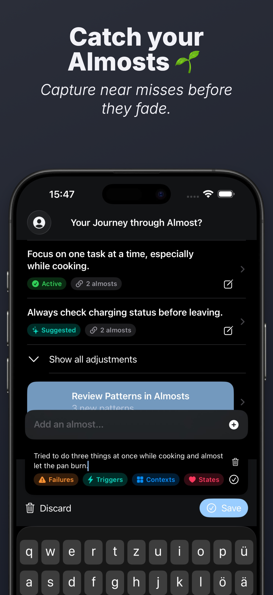
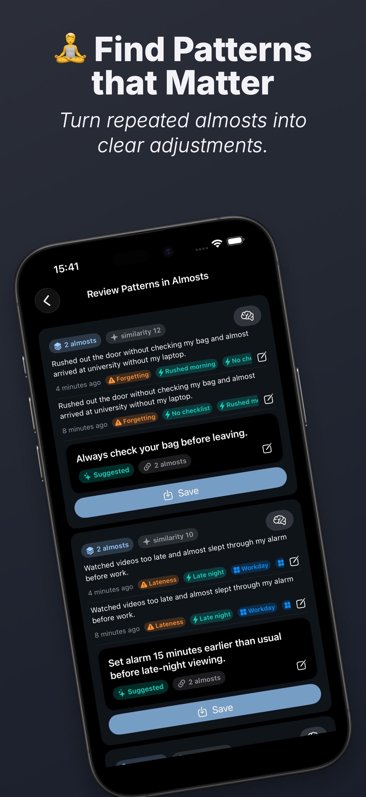
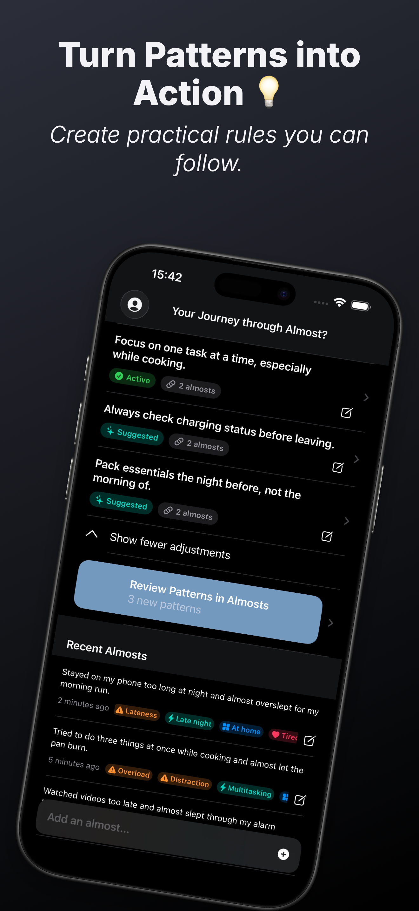

🌱 Catch your Almosts
Capture near misses before they fade. Log what almost happened, review the tags, and save it in seconds.

🧩 Find Patterns that Matter
Review repeated almosts together. See what keeps happening and turn those recurring moments into clear adjustments.

💡 Turn Patterns into Action
Create practical rules you can actually follow. Keep them active, stabilize what works, and improve through small corrections over time.
Start catching your almosts
Download Almost? to capture near misses, review recurring patterns, and turn them into practical adjustments.